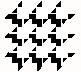

Formal Power Series and Algebraic Combinatorics

University of Rutgers, 23-27 May 1994
Louis J. Billera, Curtis Greene, Rodica Simion, Richard P.Stanley
Formal Power Series and Algebraic Combinatorics
University of Rutgers, 23-27 May 1994
Louis J. Billera, Curtis Greene, Rodica Simion, Richard P.Stanley
| Acts of invited lectures in a book at DIMACS |  |
| at Rutgers University |
| Isabelle Dutour |
| Olivier Guibert |
|
Institut for Advanced Study School of Mathematics Oden Lane, Princeton N.J. 08540 Tel. (609) 734-8043 FAX: (609) 951-4459 |
|
Christian Krattenthaler Institut für Mathematik Universität Wien Strudlhofgasse 4 A-1090 Vienna AUSTRIA tel: +43/1/4277506-43 fax: +43/1/4277506-70, +43/1/31367-4040, +43/1/3106347 e-mail: kratt@pap.univie.ac.at |
| Victor Reiner |
|